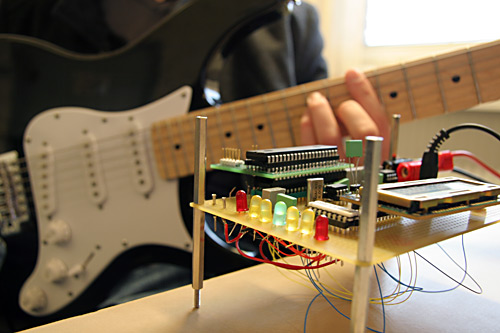

Digitala projekt, EITF40
Av Jakub Gorski (D07) och Patrik Thoresson (D07)
Detta projekt är en del av kursen Digitala projekt, EITF40, på LTH.
Som projekt i kursen valde vi att göra en stämapparat för gitarrer
baserat på processorn ATmega16. Gitarren ansluts med hjälp av en
3,5 mm ingång och 7st LED-lampor används för att ge användaren
indikationer om nuvarande sträng ska höjas eller sänkas. Under projektets
gång stötte vi på en rad oväntade problem och lärde oss mycket på vägen.
I vår rapport kan man läsa hur vi gick till väga och vilka problem vi stött på.
